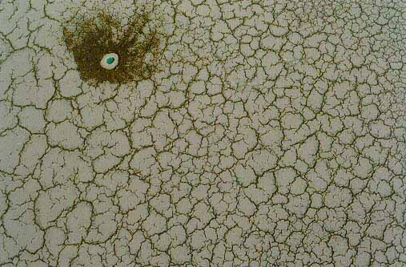

Among the adventure trips that I made while I was a
student, one was to Dasht-e Lut area near Kerman. To prepare for that trip we
used several different maps of Iran. On one of the maps I noticed an area in the
Great Central Desert of Iran named Rig-e Jenn (demon dunes). The name sounded
mysterious, spooky, and at the same time tempting enough and I started thinking
of visiting the area. But my trip to the US for studies, and then the revolution
in 1979 and its aftermath made me forget about this idea.
The long forgotten idea revived many years later, in 1996 when on a trip to
the Kavir National Park, the name was brought up in a conversation with Mr.
Miran Zadeh, chief ranger of the Park. He told me and Farrokh Mostofi that he
had wished to visit the area since he was a child, but never did it because he
couldn't find people ready to do this. Besides, he admitted that he is a bit
scared about this unknown, and un-traveled area which happened to be in the
neighboring vicinity of the Park he manages.
Eventually we did go to this area (see Second
Trip). But before that, we did a short aerial trip, renting a small plane in
Tehran and flying to the area. This was to assure Mr. Miran Zadeh (as well as
ourselves) that there is nothing extraterrestrial there, just salt, mud and
sand. But we were in for some surprises. Here are two pictures of this aerial
trip.

Our first surprize. A fresh looking crater near the
route to Rig-e Jenn. The azure patch is salt water in the crater. The whitish
collar is crystallized salt. The brown areas are dirt brought up by the impact.
The picture was taken from a distance of about 50m. What caused this crater, one
wonders?